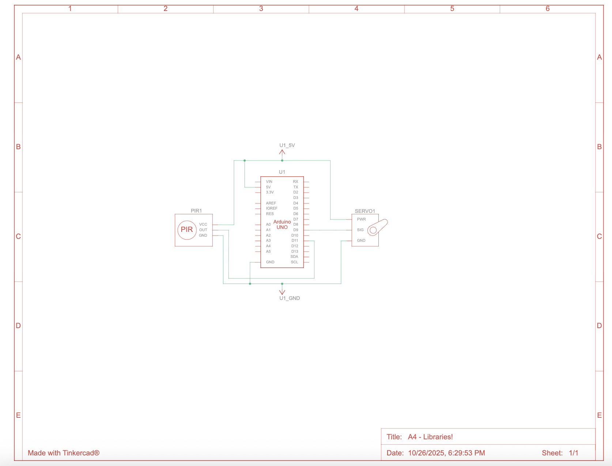
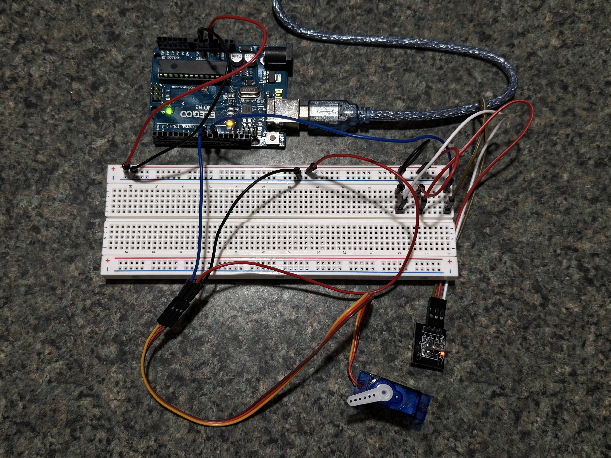
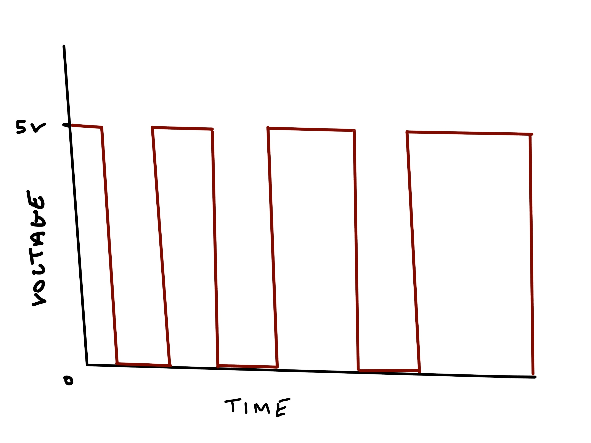

For my A4 circuit operation, I used the IRremote and Servo libraries to control a servo motor using an infrared remote.

The schematic for this circuit shows how the components are connected. The IR receiver is connected to pin 11, and the servo motor's control pin is connected to pin 9.

The physical circuit ensures that all components are properly connected as per the schematic.
#include IRremote.h //intializing IRremote library
#include Servo.h //intializing Servo library
int RECV_PIN = 11; //sets IR receiver signal pin
int servoPin = 9; //sets servo control pin
Servo myservo; //intializing server object
int pos = 90; //sets servo initial position
void setup() {
Serial.begin(9600); //establishes serial communication
IrReceiver.begin(RECV_PIN, ENABLE_LED_FEEDBACK); //starts IR receiver on respective pin and enables LED feedback
myservo.attach(servoPin); //sets servo object to respective pin
myservo.write(pos); //moves servo to initial set position
Serial.println("Press arrow UP or DOWN button to move servo"); //prints out instruction message
}
void loop() {
if (IrReceiver.decode()) { //checks to see if IR signal is received
unsigned long code = IrReceiver.decodedIRData.decodedRawData; //stores received code
if (code == 0xF807FF00) { //checks if the received code matches the UP button
pos += 10; //if it matches, moves servo up by 10 degrees
if (pos > 180) pos = 180; //checks if it reached servo max angle and prevents it
myservo.write(pos); //moves servo to new position
Serial.println("UP"); //prints out movement confirmation
delay(300); //delay to prevent spam
}
else if (code == 0xF609FF00) { //checks if the received code matches the UP button
pos -= 10; //if it matches, moves servo down by 10 degrees
if (pos < 0) pos = 0; //checks if it reached servo min angle and prevents it
myservo.write(pos); //moves servo to new position
Serial.println("DOWN"); //prints out movement confirmation
delay(300); //delay to prevent spam
}
IrReceiver.resume(); //prepares for next signal
}
}
This code receives and decodes IR signals from the remote an checks if the UP or DOWN buttons are pressed. Depending on which button is pressed, the servo motor moves up or down by 10 degrees, with limits set to prevent over-rotation.
#include IRremote.h //initializing IRremote library
int RECV_PIN = 11; //sets IR receiver signal pin
void setup() {
Serial.begin(9600); //establishes serial communication
IrReceiver.begin(RECV_PIN, ENABLE_LED_FEEDBACK); //starts IR receiver on respective pin and enables LED feedback
Serial.println("Ready to receive IR signals..."); //prints out instruction message
}
void loop() {
if (IrReceiver.decode()) { //checks if IR signal has been received
Serial.print("Button pressed: "); //prints out IR signal value
Serial.println(IrReceiver.decodedIRData.decodedRawData, HEX); //prints out IR signal value
IrReceiver.resume(); //prepares for next signal
}
}
This code receives and decodes IR signals from the remote, printing out the raw data value in hexadecimal format whenever a button is pressed.
1.

As the servo angle increaes, the width of the pulse also increases while the time between pulses remains constant.2.
//callibrate an intial series to average input device readings
sum = 0 //store readings value
numReadings = n //set series length
for loop through n readings //looping through readings
reading = input //store reading
sum = total //add up total readings
avg = sum / n //calculate average
then use avg as baseline for constraining input values
3.
//set a continuous range of input values to get average from fluctuating device input readings
sum = 0 //store readings value
numReadings = n //set series length
readings[] //array to store readings
while taking device readings //continuous reading loop
add new reading to readings[] //store new reading in array
if readings[] > numReadings //check if array is full
remove oldest reading from readings[] //remove oldest reading
avg = sum of readings[] / numReadings //calculate average
use avg as baseline for constraining input values
4. Yes, I used ChatGPT to help me understand how to get remote values using the IRremote library. I asked specifically about what functions were needed to receive and decode IR signals.